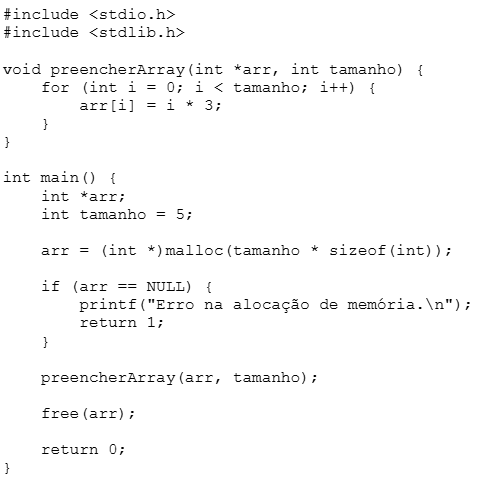

Questões de Alocação Dinâmica em C
Pergunta 1
Considere o trecho de código em C abaixo:

Com base no código acima, analise as afirmativas:
- I. A função malloc aloca um bloco de memória suficiente para armazenar um array de inteiros com “tamanho” de elementos.
- II. A função preencherArray recebe um ponteiro como parâmetro e pode modificar diretamente o conteúdo da memória alocada dinamicamente.
- III. A função free libera a memória alocada, garantindo que o ponteiro arr seja automaticamente redefinido para NULL.
- IV. Caso a alocação de memória falhe, o ponteiro arr será igual a NULL e o programa exibirá uma mensagem de erro.
Alternativas:
- I, II e IV, apenas.
- I, II e III, apenas.
- II, III e IV, apenas.
- I e II, apenas.
- I, II, III e IV.
Resposta correta:
I, II e IV, apenas.
Explicação:
- A malloc realmente aloca memória dinamicamente.
- A função preencherArray modifica diretamente os valores do array.
- free() libera memória, mas NÃO redefine automaticamente o ponteiro para NULL.
- Quando malloc falha, retorna NULL.
arr = (int *)malloc(tamanho * sizeof(int));
Pergunta 2
A alocação dinâmica de memória permite que um programa reserve espaço em tempo de execução.
Determine qual função é utilizada para alocar dinamicamente um bloco de memória.
Alternativas:
- realloc()
- scanf()
- free()
- malloc()
- sizeof()
Resposta correta:
malloc()
Explicação:
malloc() reserva um bloco de memória dinamicamente durante a execução do programa.
Pergunta 3
Indique qual função é responsável por alocar dinamicamente um bloco de memória e inicializar todos os seus bytes com zero.
Alternativas:
- sizeof()
- scanf()
- calloc()
- malloc()
- realloc()
Resposta correta:
calloc()
Explicação:
- calloc() aloca memória dinamicamente.
- Além disso, inicializa os bytes com zero.
- Diferente de malloc(), que não inicializa valores.
Pergunta 4
Na linguagem C, analise as afirmações sobre a função free():
- ( ) A função free() libera a memória alocada dinamicamente.
- ( ) Após chamar free(), o ponteiro automaticamente se torna NULL.
- ( ) É seguro acessar os dados após free().
- ( ) Chamar malloc() libera memória alocada.
- ( ) O uso de free() é obrigatório para variáveis estáticas.
Alternativas:
- V, F, V, V, F.
- F, V, V, F, F.
- V, F, F, V, F.
- V, V, F, F, V.
- V, F, F, F, F.
Resposta correta:
V, F, F, F, F.
Explicação:
- free() libera memória.
- O ponteiro NÃO vira NULL automaticamente.
- Acessar memória liberada é comportamento indefinido.
- malloc() aloca memória e não libera.
- Variáveis estáticas não usam free().
Pergunta 5
Os ponteiros são amplamente utilizados para gerenciar memória de forma eficiente.
Analise as asserções:
- I. Os ponteiros podem armazenar o endereço de memória de qualquer tipo de variável, incluindo estruturas.
- II. O tipo void* pode ser usado como ponteiro genérico.
Alternativas:
- As asserções I e II são verdadeiras, e II justifica I.
- As asserções I e II são verdadeiras, mas II não justifica I.
- I é falsa e II é verdadeira.
- I é verdadeira e II é falsa.
- I e II são falsas.
Resposta correta:
As asserções I e II são proposições verdadeiras,
e a II é uma justificativa correta da I.
Explicação:
- void* é um ponteiro genérico.
- Ele pode armazenar endereço de diferentes tipos de dados.
- Por isso ele justifica a afirmativa I.
void *ptr;